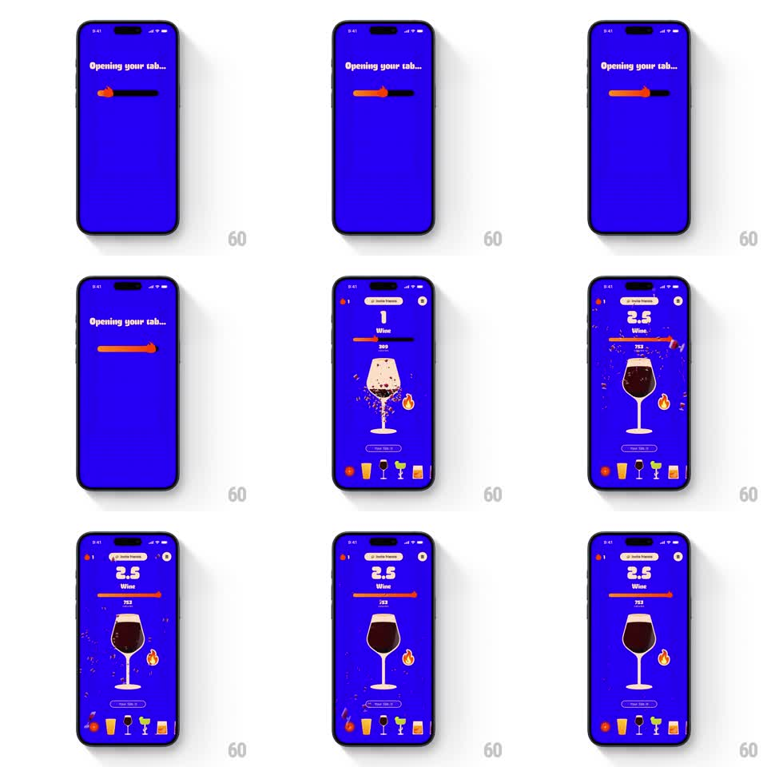

Media
Frame-by-frame

Rebuild this animation 1:1: BurnBar's tab opening - a loading bar with a flame tip fills across a blue screen under "Opening your tab...", then the dashboard pops in with a confetti burst around the glass as the big counter ticks up to the day's total.

Rebuild this animation 1:1: BurnBar's tab opening - a loading bar with a flame tip fills across a blue screen under "Opening your tab...", then the dashboard pops in with a confetti burst around the glass as the big counter ticks up to the day's total. ## Integration Integration: stack-agnostic spec - springs given as stiffness/damping, timed motions as duration + curve; map every value to your framework and animation library of choice. ## Scene Two states on electric blue. Loading: "Opening your tab..." headline top-left, a thin track with an orange fill bar and a flame riding its tip. Dashboard: streak pill, giant counter with drink name, progress bar, hero glass with confetti around it, and the bottom drink row. ## Motion spec Pattern: loading bar resolves into a celebration reveal. - The bar fills left to right over ~1.5s with a slight ease; the flame at its tip flickers (scale +/- 8%, rotate +/- 5 degrees at 10Hz). - On completion the bar flashes full-white for one frame and dissolves. - Dashboard elements spring in from 24px below (spring ~280/16): counter first, then glass, then bottom row, 90ms stagger. - The glass lands with a confetti burst - 20-30 small rectangles in orange, white, and dark blue, ejected radially from behind the glass (gravity pulls them down, they fade over 900ms). - The counter ticks up from 0 to the final value (odometer roll, ~600ms, easing out). ## Calibration - Confetti is paper-like: flat rectangles that rotate as they fall, not circles. - The loading flame is small and cheeky - it should feel like the bar is being burned through. ## Reduced motion Loading bar fills without flicker; dashboard fades in (250ms) without confetti; counter shows the final value directly. ## Don't miss - Confetti bursts once, at the glass landing - it is not a loop. - The transition from bar to dashboard is a hard cut with a spring entrance, not a crossfade.